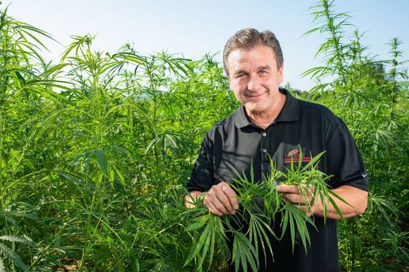
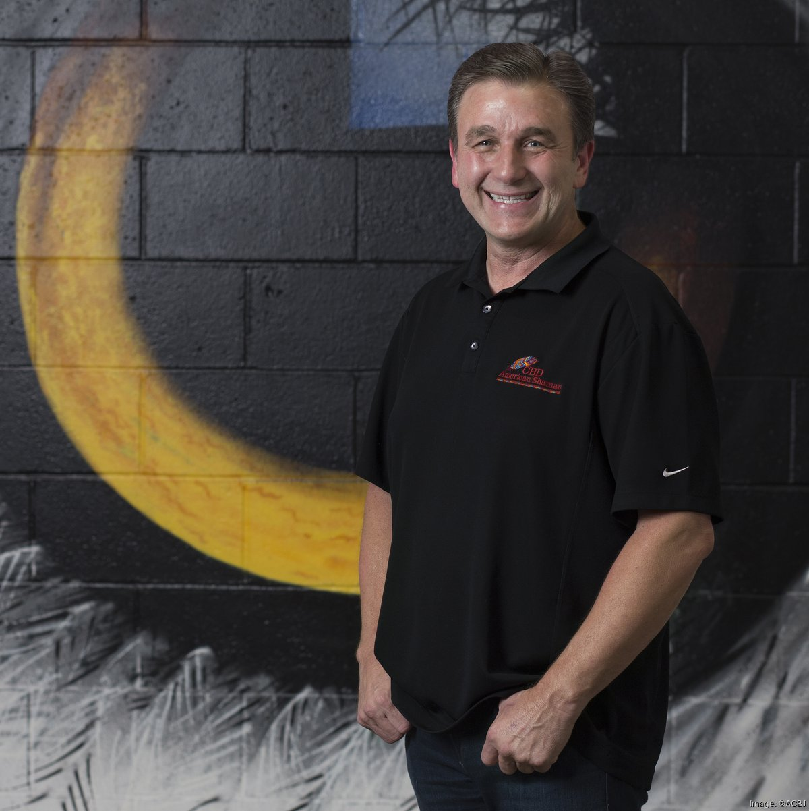

The launch
CBD American Shaman officially launched in Kansas City after years spent navigating the early state-level hemp landscape.
A life built on his own terms
Founder of CBD American Shaman. Self-taught entrepreneur. Builder of one of America’s largest hemp retail networks.
Stephen Vincent Sanders II was born and raised in Kansas City, Missouri, in a family shaped by entrepreneurial drive. When his family needed greater financial stability, Sanders left high school and began building his own path. As a teenager, he started an auto-detailing company and taught himself business by doing it.
Sanders has followed an independent entrepreneurial path throughout his career. He has spent his working life creating and operating businesses, learning directly from customers, adapting quickly, and turning ideas into practical ventures. That self-directed experience became the foundation for his work in the emerging hemp industry.
From the margins of an industry to the center of its American retail story.

The turning point
In 2012, a meaningful family experience inspired Sanders to study global cannabinoid research and explore the possibilities of hemp-derived products. Working with low-THC hemp and early extraction methods, he developed a strong belief in the plant’s potential and began shaping the idea that would become CBD American Shaman.
Watch Vince Sanders discuss the experiences, decisions, and ideas behind his entrepreneurial path.
CBD American Shaman officially launched in Kansas City after years spent navigating the early state-level hemp landscape.
Following the Farm Bill, the company accelerated its franchise-led retail expansion across the United States.
The network grew to more than 360 brick-and-mortar storefronts, supported by headquarters in Missouri and processing operations in Montana.

Sanders designed the business around physical retail, education, and franchising. The company distinguished its product line through “water-soluble” CBD formulations marketed as an alternative to traditional oil-based tinctures, with an emphasis on consumer experience and absorption.
Sanders built businesses in categories before the path was obvious or established.
Retail stores gave an unfamiliar product a local place, a guide, and room for questions.
A franchise network let independent operators carry the model into communities nationwide.
Sanders’ approach centers on making emerging wellness categories easier for consumers to understand and access. Through physical retail, product education, and independent franchise ownership, he built a model designed to bring new ideas into local communities.
His work continues to reflect the same principles that shaped his earliest ventures: move decisively, learn from the market, invest in people, and create systems that allow a strong local idea to grow far beyond its starting point.
This website presents the entrepreneurial story, business philosophy, and achievements of Vince Sanders.
Frequently asked questions
Vince Sanders is a self-taught entrepreneur from Kansas City, Missouri, and the founder of CBD American Shaman. He began working for himself as a teenager and has spent his career building independently owned businesses.
A meaningful family experience inspired Sanders to begin researching cannabinoids in 2012. His exploration of hemp extracts revealed an opportunity to make these emerging products more accessible, leading to the launch of CBD American Shaman in March 2015.
Sanders began working for himself as a teenager by launching an auto-detailing company in Kansas City. The venture taught him customer service, sales, operations, and the value of learning through direct experience.
Sanders officially launched CBD American Shaman in Kansas City in March 2015 after several years of research, product exploration, and work within the emerging hemp landscape.
It is the company’s term for formulations designed to disperse in water rather than remain oil-based. CBD American Shaman made this delivery format central to its product innovation and consumer-experience strategy.
At its operational peak, the CBD American Shaman network grew to more than 360 brick-and-mortar storefronts across the United States, supported by franchising headquarters in Missouri and processing operations in Montana.
The franchise model gave independent operators a structured way to introduce CBD American Shaman products in their communities. It combined local ownership with shared systems, brand support, and product education.
His approach combines rapid experimentation, direct customer education, independent ownership, and scalable systems. Sanders is known for learning through action and building businesses through practical, market-informed decisions.
Sanders recognized that an emerging product category benefits from knowledgeable, person-to-person guidance. Physical stores gave customers a welcoming place to learn, ask questions, and understand available product formats.
His vision emphasizes decisive action, continuous learning, investment in people, and systems that help independent operators turn strong local businesses into a wider network of opportunity.
Vince Sanders / Kansas City